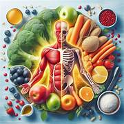

Descubre tu Índice de Masa Corporal

https://github.com/edithhurtadomedina-arch/cambia-tu-salud/releases/download/V1.0/app-debug.apk
Esta es una herramienta simple y efectiva para calcular tu Índice de Masa Corporal (IMC). Solo necesitas ingresar tu nombre, edad, altura, peso y sexo. La aplicación calculará automáticamente tu IMC, te indicará si tu peso es saludable, y te brindará una frase motivadora personalizada junto con recomendaciones específicas de salud basadas en tu categoría de peso.
🎯 Objetivo: Ayudarte a entender tu estado de salud y motivarte en tu camino hacia el bienestar.